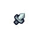

← Return to Dashboard
ARTIFACT INVENTORY
Inspect secured relics to reveal campaign data.
Overworld Map
The TWINspect Sentinel
The Commuter's Codex
The Symphonic Crystal
The Obsidian Apparatus

The Kaizen Hammer
The Iberian Compass
The Mentor's Lantern
X
 Overworld Map
Overworld Map